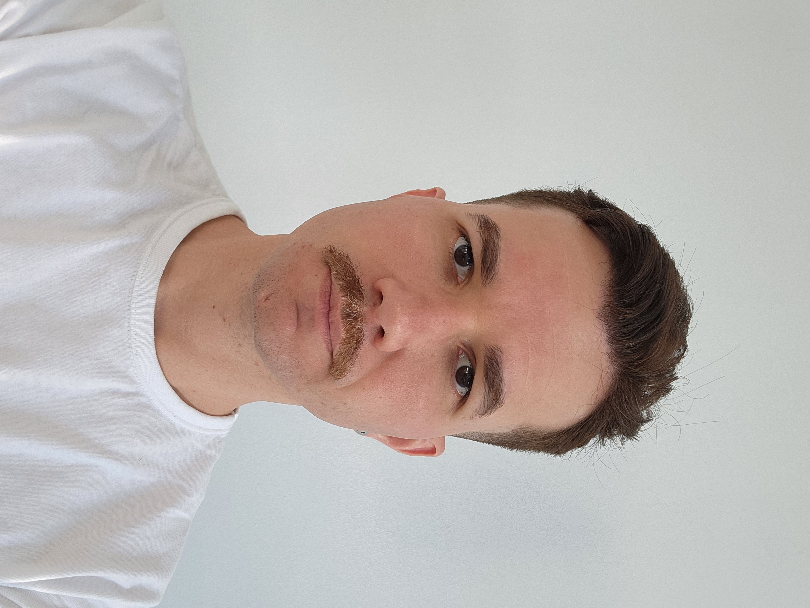
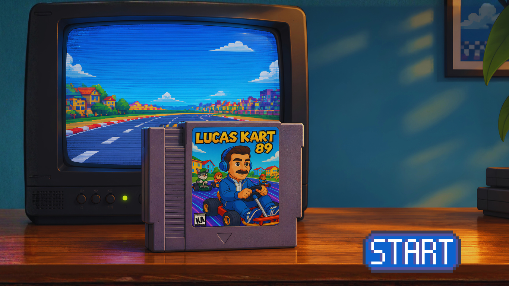
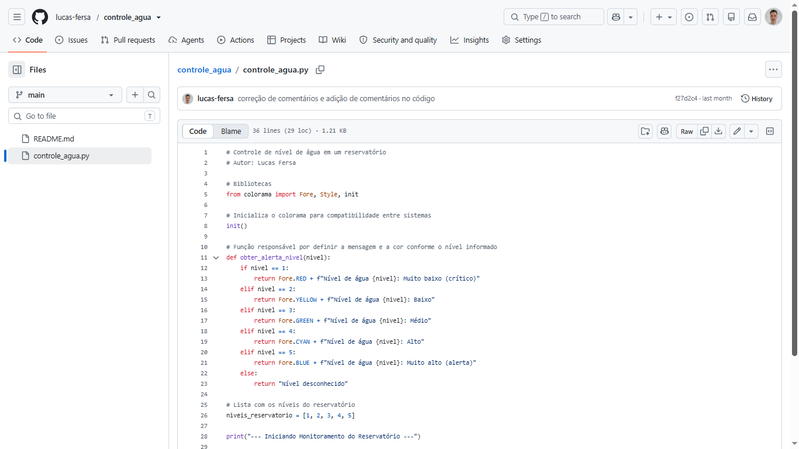
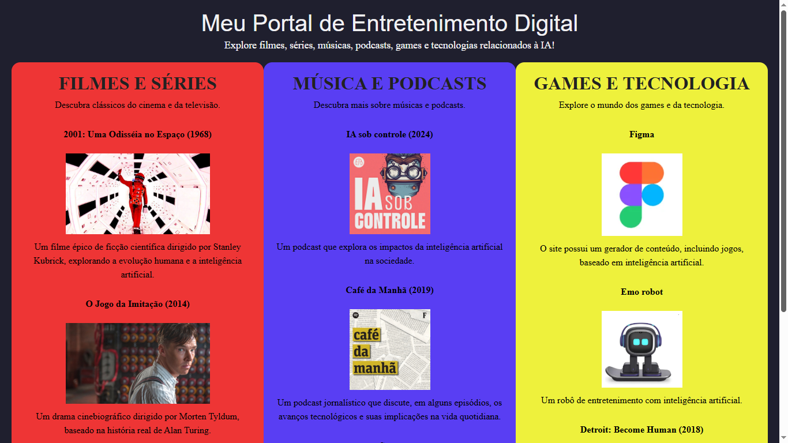

Estudante de Desenvolvimento de Sistemas e IA
Portfólio AcadêmicoDesenvolvimento de Sistemas
Sou um estudante de desenvolvimento de sistemas e inteligência artificial apaixonado por tecnologia e inovação. Com foco em diversas linguagens de programação e frameworks, busco constantemente aprimorar minhas habilidades e contribuir para projetos desafiadores. Meu objetivo é criar soluções eficientes e impactantes que atendam às necessidades dos usuários.
São Paulo, SP
Desenvolvimento de Sistemas e Inteligência Artificial
ETEC e Univesp
Criar soluções inovadoras, especialmente para a área da Educação
Minha trajetória de estudos, da área de linguagens à tecnologia.
Faculdade Anhanguera de Taubaté
Estudo da língua portuguesa, da língua inglesa, da literatura e da produção de textos.
Universidade de São Paulo (USP)
Comunicação aplicada à educação, com foco em mídias e tecnologias.
Escola Técnica Estadual Getúlio Vargas (ETEC)
Lógica de programação, HTML, CSS, Python e desenvolvimento de aplicações.
Universidade Virtual do Estado de São Paulo (Univesp)
Fundamentos de inteligência artificial, dados e programação.
Alguns projetos e atividades que representam minha evolução na área de desenvolvimento.

Site desenvolvido para apresentar minha atuação em escolas, com livros didáticos, com correção de redação e na produção de jogos em power point.
Ver projeto
Sistema em Python que simula o monitoramento de um reservatório de água. Desenvolvido para o curso de Desenvolvimento de Sistemas da ETEC.
Ver projeto
Página criada com HTML e CSS para trabalhar conceitos de responsividade, layout e design de interfaces para o curso de Desenvolvimento de Sistemas da ETEC.
Ver projetoVeja minha trajetória acadêmica e profissional completa no LinkedIn.
Ver currículo no LinkedInAberto a oportunidades, projetos e conexões na área de tecnologia.
Estou em constante aprendizado e disponível para trocar ideias, compartilhar projetos e construir novas conexões profissionais.
Localização: São Paulo/SP